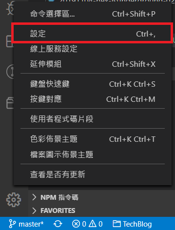
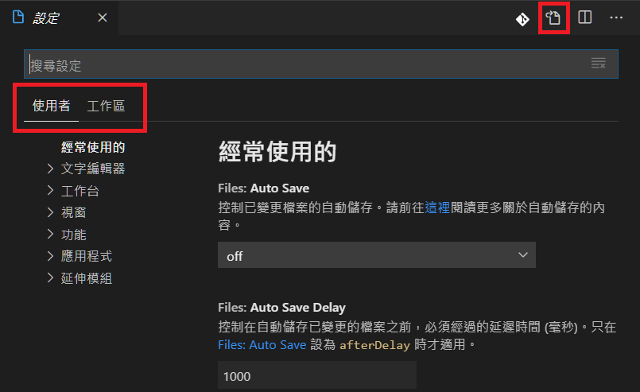
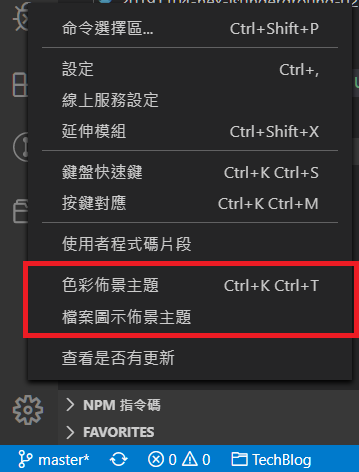
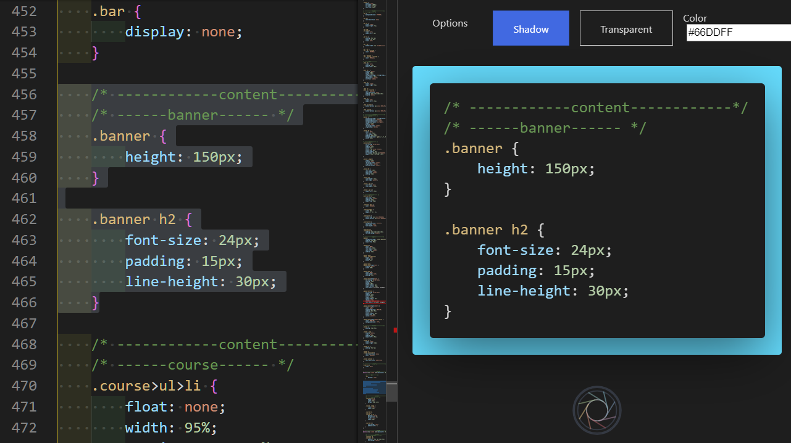
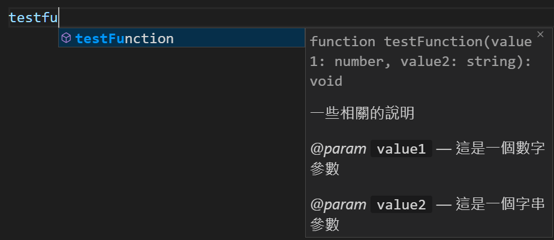

本文為觀看六角學院「 VSCode 開發功能大解密」的紀錄。
VSCode 是什麼
Visual Studio Code 是由微軟開發的開源文字編輯器，並包含很多強大的功能，輔助使用者編輯各種檔案。
基本環境介紹
VSCode 內建 Emmet 等功能，也有許多快捷鍵，方便使用。
常用的指令例如:
- Ctrl+Shift+P, F1 ：顯示所有命令
- Alt+↑/↓ ：位移整行程式碼
- Ctrl+Enter ：在下方新增一行
- Ctrl+Shift+Enter ：在上方新增一行
- Ctrl+/ ：開關註解
- Alt+Z ：切換自動換行
- Ctrl+P ：搜尋檔案
- Ctrl+D ：找到相同的片段
- Shift+Alt+F ：排版
- Ctrl+\ ：分割視窗
- Ctrl+` ：開啟終端機
官方快捷鍵列表： Keyboard shortcuts for Windows
Emmet snippests 列表： Cheat Sheet
設定
用 Ctrl+, 或左下角的齒輪處可以找到設定。

可以用圖形介面或 JSON 格式改動設定；也分成全域或工作區域設定。
例如使用 Live server 的話，就會在工作區資料夾底下出現 .vscode/setting.json ，裡面會有阜號之類的設定。

佈景主題
可以更改色彩佈景主題跟圖示佈景主題。

Atom 的色彩佈景主題： Atom One Dark Theme
圖示佈景主題： Material Icon Theme
套件
VSCode 中可以用套件做到的事情很多，例如觀看 PDF 、 CSV 等檔案類型，也能看 PTT 。
以下是一些實用的套件：
- indent-rainbow
- 把縮排上色
- Bracket Pair Colorizer 2
- 把括號上色
- GitLens
- 提示程式碼上一次提交的時間和使用者
- Code Spell Checker
- 標示錯字、可以建立字典
- favorites
- 收藏常用的檔案
- Project Manager
- 建立常用專案的捷徑
- Polacode-2019
- 將程式碼轉存為圖片
- 
支援程式語言
VSCode 支援許多程式語言，例如 JavaScript 、 C++ 、 Python 等。通常包含 IntelliSence 和 Snippets 等功能；也就是能夠顯示相關註釋及快速完成程式碼。此外還有重新命名變數的功能（選取變數按 F2 ）；又例如 Formatting ，即排版程式碼的功能。
JSDoc Support
使用者可以自訂 JavaScript 的文件。
1 | /** |
